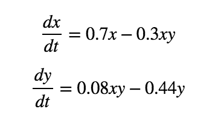

Lotka Volterra
The Lotka–Volterra equations, also known as the predator–prey equations, are a pair of first-order, nonlinear, differential equations frequently used to describe the dynamics of biological systems in which two species interact, one as a predator and the other as prey. The populations change through time according to the pair of equations for fox and rabbits:
